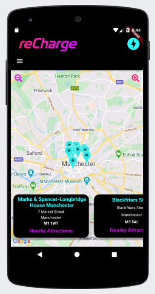

Loc Bottle Shop
Liv Moore's bottleshop
reCharge

reCharge is a full stack mobile app built to assist owners of electric cars in their journey planning. Users can generate a route planner based on how often they need access to a charge point. The app also allows the user to view local amusements to pass the time while they wait for their vehicle to charge. reCharge was a collaborative project, created with three other Northcoders students using agile practices. The app itself was built using Ruby on Rails on the backend and Dart with Flutter on the front-end.
Topical

Reddit style news app